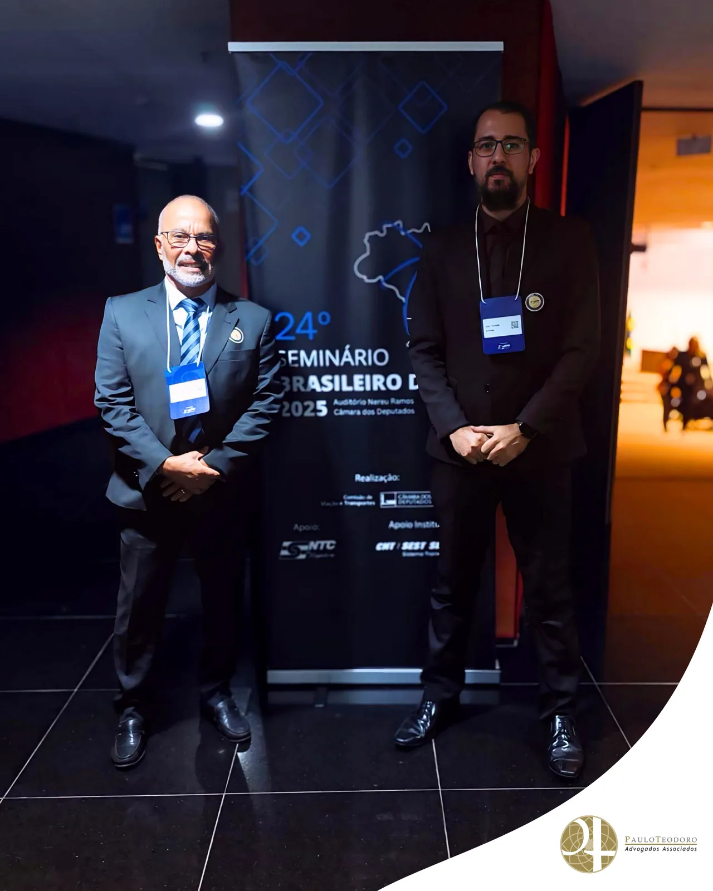
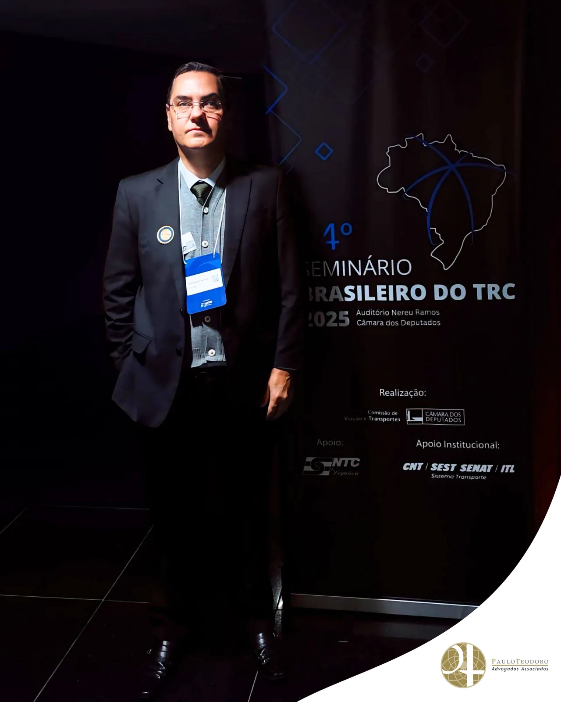
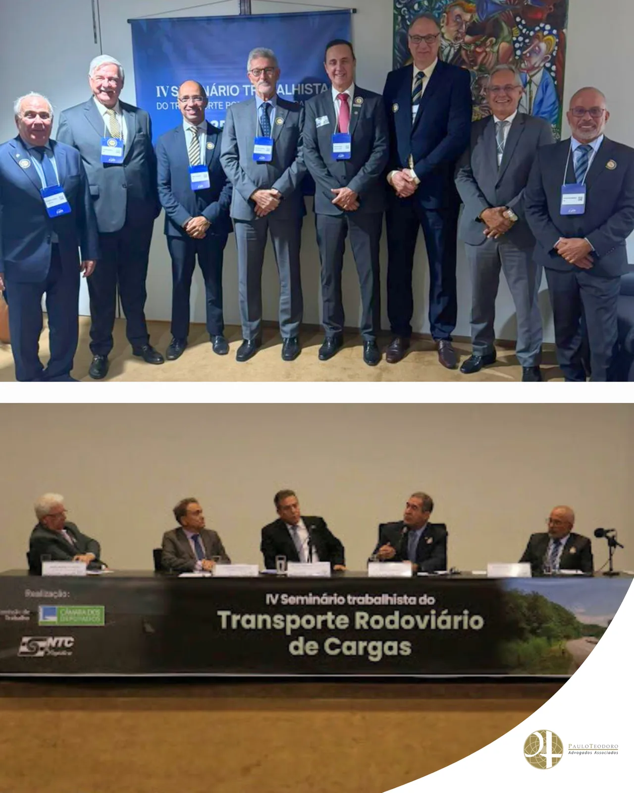
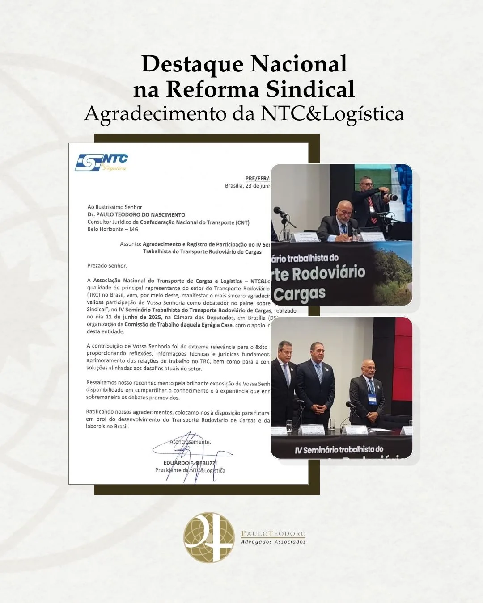

Participação do Dr. Paulo Teodoro no IV Seminário Trabalhista do Transporte Rodoviário de Cargas é reconhecida pela NTC&Logística
No dia 11 de junho de 2025, o fundador do Paulo Teodoro Advogados Associados, Dr. Paulo Teodoro, participou como palestrante do IV Seminário Trabalhista do Transporte Rodoviário de Cargas, promovido pela Associação Nacional do Transporte de Cargas e Logística – NTC&Logística.
Na ocasião, o Dr. Paulo contribuiu com o painel sobre Reforma Sindical, debatendo os impactos e desafios que envolvem a representatividade, o custeio das entidades e a necessidade de aprimoramento das relações sindicais no setor. O painel foi marcado por reflexões jurídicas importantes para o presente e o futuro das relações de trabalho no transporte de cargas.




Reconhecimento institucional
Em agradecimento pela participação, a NTC&Logística encaminhou uma carta oficial ao Dr. Paulo, reconhecendo a relevância de sua contribuição para o êxito do evento e destacando o alto nível técnico das reflexões apresentadas.
A carta reafirma o papel estratégico do seminário como espaço de construção de soluções jurídicas voltadas ao aprimoramento das relações entre empresas, trabalhadores e instituições representativas.
Compromisso com o setor
A participação ativa do escritório em fóruns técnicos e institucionais como esse reforça o nosso compromisso com o fortalecimento institucional do transporte rodoviário de cargas, setor essencial à economia nacional e que enfrenta desafios constantes de natureza trabalhista, sindical, civil e tributária.
Por meio da atuação jurídica especializada, buscamos sempre contribuir para a construção de um ambiente regulatório mais seguro, eficiente e sustentável para as empresas.
Agradecemos à NTC&Logística pela confiança e pela parceria, fundamentais para o avanço contínuo do setor.
Paulo Teodoro – Advogados Associados